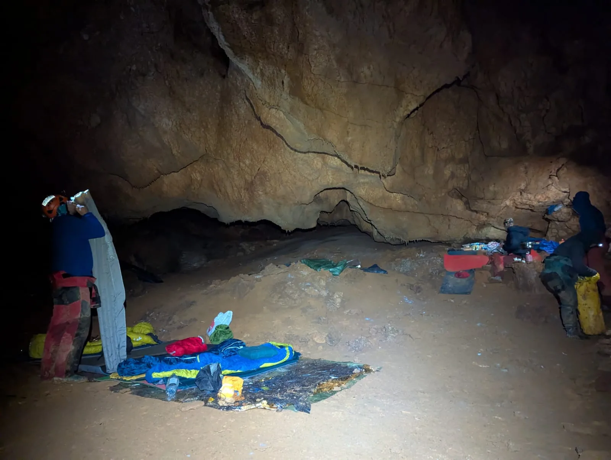

Suze u Munižabi
Sljedećih nekoliko dana izgledalo je kao emocionalni ekvivalent pite mađarice, samo što su se umjesto kore i kreme svako malo izmjenjivali strah i uzbuđenje. Više sam se puta pitala što mi je trebalo to da za drugi…

Tekst i fotografije: Petra Jagodić
1.-4. svibnja 2025.
Ekipa: Dora Troha (SOV), Olga jerković (SOV), Petra Jagodić (SOV), Nikola Prpić (SOV), Dino Grozić (SOV / SUE)
Prolog
Prekrasna sunčana nedjelja je, zadnja u travnju, a četvero Velebitaša, uključujući Olgu i moju malenkost, vraća se iz Istre s gostovanja na zadnjem terenu speleo škole SU Estavela. Kao i nakon svakog prekrasnog (no, budimo iskreni, i manje prekrasnog) izleta, postavlja se logično pitanje: kad ćemo opet? Sljedeći vikend nam je produženi zbog praznika rada i valjalo bi napraviti nešto s tim slobodnim danima. Olga, naravno, ima plan.
Poglavlje prvo: predizborna obećanja
Ideja o odlasku u Munižabu vrtila se i prije nekoliko tjedana, za Uskrsni vikend, ali tada sam još bila speleo školarka i činilo mi se da ne bi htjela riskirati vlastito uskrnuće ulaznom vertikalom od 200 m i kilometrima podzemnog labirinta. Kao i većina ljudi, taj sam se vikend zadovoljila bojanjem jaja i beskonačnim količinama šunke, a Munižaba je ostala neposjećena.
O Munižabi nisam znala puno, osim da je velika, navodno prekrasna, i da se nalazi na Crnopcu. I ne znajući da je to udica na koju ću se kasnije sama upecati, spomenula sam da, iako planinarim već godinama, nikad nisam bila na Putu Malog princa i velika mi je želja posjetiti ga. Kao svaki dobar speleolog koji gotovo pa i ne zna za riječ odustajanje, Olga je uočila izvrsnu priliku da pokuša opet: “Vidiš, nisam ni ja nikad bila. Mogli bi ići u Munižabu, pa onda u nedjelju na Malog princa”. Ni ne znam što se sljedeće dogodilo, samo znam da su iz mojih usta izašle riječi koje su jako zvučale kao: “Pa da, ok, mogli bi”.
Olgin dijabolični plan počivao je na pretpostavci da ako idem ja ide i Dino, što se na kraju pokazalo točnim. Uz Doru koja je od starta bila u igri, i Nikolu koji je uhvatio priliku da provoza novi auto i ispenje koji novi penj, skupilo se društvance od nas petero, što se činilo taman dovoljno za količinu opreme koju smo planirali donijeti za nastavak istraživanja.
Poglavlje drugo: Minižaba
Sljedećih nekoliko dana izgledalo je kao emocionalni ekvivalent pite mađarice, samo što su se umjesto kore i kreme svako malo izmjenjivali strah i uzbuđenje. Više sam se puta pitala što mi je trebalo to da za drugi izlet nakon škole odmah odlučim otići u jamu na 4 dana, ali evidentno ni ja ne znam baš za odustajanje. No, oduševljenje ljudi oko nas koji su nas gledali kako spremamo opremu u srijedu ulijevalo mi je nadu da će ipak to biti ok. U jednom od tih razgovora, spletom jezika Munižaba je slučajno preimenovana u Minižabu i ja sam zaključila da ju od sad tako zovem jer to zvuči kao nešto skroz izvedivo.
Put do Gračaca prošao je sporo ali ugodno uz zvuke Nikoline šarolike playliste. Tamo smo se sreli s Dinotom koji nam se pridružio iz Rijeke i bolje rasporedili po autima očekujući već standardno loš makadam do okretaljke. Na naše iznenađenje makadam je čak i popravljen na dijelovima, a nije nam previše muke zadao ni put do ulaza u jamu kojeg smo pogodili iz prve.
Uže na ulaznom dijelu jame tamo je prezimilo od zadnje posjete u studenom prošle godine. Uz popriličnu škripu jedva je prolazilo kroz descender, ali unatoč tome spust kroz vertikalu, baš kao i podzemno planinarenje do novog bivka prošli su relativno bezbolno. Ok, Minižabo, so far so good. Možemo mi to :)
Bivak nas je dočekao tamo gdje su ga i ostavili, iako nešto bogatiji nego što smo se nadali. Umjesto dosadnog Novog bivka odmah je dobio nadimak Pljesnivi bivak. Tura dobrodošlice provela nas je kroz sve najbitnije lokacije: gdje se spava, gdje se jede, gdje je oružarstvo, gdje su se rasuli čvarci, a gdje prolila juha zadnji put… (op.a. Tamo negdje treći dan dodala sam i ja svoj doprinos razvoju nove civilizacije prevrnutom Cedevitom ali to nećemo nikome reći).
Uz toplu večeru, počeli smo kovati plan za sutra. Na meniju je polica i nekoliko penjeva odmah nasuprot bivka koji su djelomično istraženi, ali još ne i nacrtani. Osim toga nude se i kanali kod točke 337 koji imaju nekoliko upitnika, uključujući i jednog kojeg treba širiti. Sve su se glave nadvile nad postojeće nacrte, ali previše je tu bilo kombinacija da bi u tom trenu odlučili. Budemo to sutra po danu.
Poglavlje treće: bum, nebum
Iduće jutro Olga nas je namamila iz toplih vreća najnezagorenijom jamskom kajganom ikad napravljenom (ili su mi bar tako rekli - ovo je ipak bila tek moja prva jamska kajgana pa nije da sam imala s čime usporediti). Opet bacamo pogled na nacrt i konačno dogovaramo: podijeli pa vladaj. Olga i Nikola idu raditi penjeve kod bivka i preseliti se u desni krak novog dijela ako stignu, a Dora, Dino i ja ćemo odnijeti užeta i proširiti upitnik u lijevom kraku pa dalje u nepoznato.
I tako je krenulo moje prvo pravo speleo iskustvo. Zašto “pravo”, pitate se? E pa zato što sam vrlo brzo shvatila da je ono što su mi rekli u školi stvarno bilo istina: svi oni divno opremljeni objekti sa centralnim karabinerima na Y sidrištu u koje se jednostvano ukopčaš, gelenderima posvuda i instruktorom na liniji odmah pored tebe u praksi su samo predmet snova. Ovaj jurišni stil opremanja s minimalnom količinom opreme posebno je zanimljiva zagonetka za koju ne mogu reći da sam ju uvijek na najlakši način riješila. Ali uz strpljivu pomoć kolega, sva sam zapinjanja uspješno prošla i nekoliko sati kasnije stigli smo do dijela kojeg treba proširivati sa svom opremom i udovima na broju.
Dino se smjesta bacio na proširivačke aktivnosti, dok smo se Dora i ja zabavile poslovima u kuhinji. O debaklu prvom dovoljno je samo reći da smo nažalost u kuhinji bili puno uspješniji od dijela u nekuhinji. Ispalo je na kraju da taj “nos” koji smeta za prolaz ima još nosate braće malo dalje, a stijena nije dala privolu za plastičnu operaciju. Nakon mnogih pokušaja proširili smo gotovo ništa i sat-dva kasnije potpisali poraz.
Vidno razočarani, pojeli smo juhu, spakirali sve stvari i zaputili se natrag istim putem. Budući da nam se nije žurilo, usput smo malo razgledavali što još ima, vrtili se u krug po epifreatskom labirintu i slučajno gurnuli glavu u još neistraženi kanalić čiji se ulaz skrivao iza pješčanog brdašca. Zapamtili smo gdje se nalazi pa se Dino nakon večere u bivku, u light and fast stilu, vratio nacrtati ga da skupimo i mi bar nešto metara za danas dok s nestrpljenjem čekamo drugu ekipu.
Olga i Nikola u međuvremenu su uspješno popeli i nacrtali već popeti penj kod bivka, te spojili nekoliko upitnika u desnom kraku. Skupilo se tu stotinjak novih metara bez kojih bi cijeli ovaj poduhvat završio krajnje tužnim rezultatom, a zašto i kako saznat ćete uskoro.
Poglavlje četvrto: debakl drugi
Iduće jutro (sad smo već na suboti) opet započinje Olginom kajganom, ovaj put začinjenom bolovima u dijelovima tijela za koje nisam ni znala da ih imam. Nisam sigurna kako je razmišljanje da uvijek može gore postalo oblik optimizma, ali ovaj put je stvarno bilo istina: Nikola nam se razbolio i obznanio da je njegov plan za danas ostanak na bivku u horizontalnom položaju.
U ovako smanjenom sastavu mi ostali odlučujemo pokupiti sva užeta i željezo koje nismo iskoristili jučer i sve to odnijeti do drugog najperspektivnijeg upitnika - onog na dnu desnog kraka - koji se nalazi na otprilike -475 m. Sa skoro 200 m užeta u transportkama potajno smo se nadali da bi mogli doseći novu najdublju točku cijele Munižabe koja trenutno stoji na -510 m.
Put do tamo uglavnom je zanimljivo skokovit, sa pokojim blatnim ali jako zabavnim toboganom i jednom fantastičnom prilikom za samorazapinjanje u zraku točno između dva zida na vrhu vertikale. Takvu jedinstvenu priliku naprosto nisam mogla propustiti, koliko god se trudila.
Kažu sve što je lijepo kratko traje, pa tako i naš put prema središtu Zemlje postaje sve blatniji i uži dok se u jednom trenutku ne pretvori u uske meandre gdje su ti fizika i trenje sredstva preživljavanja, a guzica i koljena apsolutno najjači aduti. Nakon otprilike tri sata u pokretu naišli smo na malo proširenje između dva meandra gdje je bilo dovoljno mjesta za zajedničku pauzu.
Znali smo da smo blizu kraja poznatog dijela. Isto tako smo znali da ću se ja vjerojatno zaputiti natrag prema bivku prije ostalih jer je već i ovo dovoljno velik zalogaj za prvi put, a sada je možda dobar trenutak za okret. No to znači da moramo naći doborovoljca koji će ići sa mnom. Cure su bile odlučne u namjeri da nastave dalje same ako to bude Dino pa smo im prepakirali opremu u tri transportke. Olga je hrabro preuzela dvije i napala idući meandar. Ono što se dalje događalo nisam vidjela nego prepričavam po vlastitim auditornim doživljajima i slikovitim opisima od drugih, no mislim da iz naslova cijelog ovog teksta već naslućujete o čemu se radi.
Meandar je bio neumoljiv. Navodno nezgodno postavljena špaga vukla je na jednu stranu, gravitacija na drugu i vrlo brzo je cijeli sastav Olga & Transportke završio u suženju u kojem nije trebalo završiti. Koliko su brzo u njega upale toliko su se sporo iz njega izvlačile. Dora i Dino pokušali su pomoći, ja sam pokušala ne smetati, a Olga je pokušala doslovno sve pa i podmazivanje vlastitim suzama.
Cijela operacija izvlačenja trajala je oko pola sata nakon čega je Dino objektivno sagledao situaciju i jednoglasno odlučio da se svi vraćamo natrag. Dosta (mu) je bilo za danas i suza i žena koje plaču: jedna zato što je zapela, druga zato što zbog ove prve ne može dalje i treća jer generalno nema pojma što radi. Da ipak napravimo nešto korisno, odlučili smo tamo ostaviti užeta i željezo, te preopremiti zločesti meandar da onome tko dođe sljedeći put bude lakše.
Olga koja je bila izbijena od borbe sa suženjem i ja kojoj je postalo poprilično hladno od silnog nesmetanja krenule smo odmah prema bivku, dok su Dino i Dora ostali raditi. Očekivala sam još bar jedno ili dva zapinjanja (ili razapinjanja) putem, no izgleda da sam ipak nešto i naučila ovih dana. Uspon je na kraju trajao kraće nego nam je trebalo da se spustimo, a našle smo čak i volje za usputno turističko razgledavanje znamenitih siga.
Ugledale smo Nikolu na bivku već oko 17:45 što je izuzetno rano za jedan istraživački dan u jami. Njegovo je stanje bilo nepromijenjeno, ali bar nije bilo lošije nego jutros. Zajedno smo ubacili nešto u kljun, skuhali juhe i čaja za vojsku, a onda odlučili ispuniti jedinu Dinotovu želju izraženu u trenutku očaja dok smo vadili Olgu iz meandra: da dođe na bivak i vidi nas sve zamotane kao buhtle u svojim vrećama na sigurnom. Pa kad je čovjek već zaželio, da mu taj san i ispunimo…
Oko dva sata kasnije obradovali su nas poznati glasovi i svjetla. Ovaj je dan završio još ranije nego jučerašnji, ali već smo se pomirili s tim da će ovo biti jedan opušteni vikend. Pregladnjelim preopremačima smo podgrijali juhu za prvu pomoć, a zatim se ugodno razmjestili po kuhinji s još jedinim preostalim ciljem: da pojedemo i popijemo sve što je kvarljivo i što sigurno nećemo nositi sa sobom na površinu. Red štrukanog pelina, red kajgane, red zobene kaše, red kruha s majonezom, red krastavca i tako u krug dok nije postalo dovoljno kasno da se vratimo toplim vrećama.
Poglavlje peto: iii… kad ćemo opet?
Dobra stvar u ranom lijeganju je rano ustajanje, zbog kojeg je Nikola bio posebno sretan jer se nadao dolasku u Zagreb do 20h. Čak je i Olgu preduhitrio s jutarnjom kajganom, ovaj put sa slaninom ali bez luka.
Nakon prve točke dnevnog reda (obilnog doručka), spremili smo prvo osobnu opremu, uključujući i spravice koje su noć provele u veš mašini (loncu po kojem je padala voda) u pokušaju da skinemo prst blata kojeg smo skupili putem.
Zadnji zadatak prije napuštanja bivka je pospremanje, te popisivanje sve opreme i hrane koja ostaje za drugi put. Još jedan pogled preko ramena i krećemo. Moram priznati da, koliko god sam se veselila suncu koje me vjerojatno čeka na površini (prognoza je prije 4 dana najavljivala neku kišu za ponedjeljak…), bilo je i malo tužno oprostiti se od mjesta koje mi je bilo dom ova četiri dana. A možda me samo bilo strah one iste dvjestometarske ulazne vertikale koju je sad pak trebalo ispenjati…
No, kao sva ostala očekivanja od ove avanture, i ovo se pokazalo potpuno krivim. Penjanje je prošlo skoro jednako bezbolno kao i spuštanje, a kad si spor na prelasku međusidrišta stigneš se i dovoljno odmoriti. U više sam navrata požalila što sam mobitel spremila na sigurno u transportku jer je pogled na svjetla ispod mene bio fantastičan, no nažalost foto dokumentacija na ovom izletu je također debakl svoje vrste.
Toplo sunce i nebo bez oblačka dočekali su nas na površini, praćeni laganim proljetnim povjetarcem i jarkim bojama prirode u proljeće. Izležavanje na toploj stijeni dok čekamo da svi izađu (i onaj zadnji raspremi uže sa ulaznog dijela da ne bi moralo tamo i ljetovati) bit će svakako trenutak za pamćenje. Šteta što su oni iza mene bili tako brzi…
Presvlačenje u čiste i suhe kratke rukave također je jedna od onih stvari koje tak tada naučiš cijeniti. No očekujući gužvu na cesti, ubrzali smo povratak do auta (i gumenih bombona koji su nas tamo čekali). Još jedno prepakiravanje kasnije, čini mi se bar stoto ovaj vikend, i Nikolin auto zajedno s Olgom i Dorom jurio je za Zagreb.
Dino i ja smo se pak opredijelili za opciju B: pizza iz Dijane na obali Otuče dok se u njoj toća blatna oprema. Osim toga, suvremena speleologija nalaže da izlet nije gotov dok ne provjeriš bar jednu lidarku pa smo usput još malo bacili oko na dvije: jedan sigurno objektić i jedan možda-bi-se-dalo-nategnuti-pet-metara-ako-malo-zažmiriš objektić. Nismo nacrtali ništa, ali znamo di su, za neki drugi put.
Kad je pizza bila pojedena (pozdrav tetama koje su nam u prolazu čestitale na izvrsnoj ideji!), oprema oprana i donekle osušena, a novi stremen izgubljen, kucnuo je čas da se i mi polako (jer zbog gužve na cesti brže ni ne možeš) vratimo natrag u stvarni život.
No, nešto mi govori da ćemo se opet sresti, taj moćni Crnopac i ja…
Epilog
Mislim da vam je jasno da od Malog Princa nismo vidjeli ni P. Nikad nije ni dolazilo u obzir da se ide u jamu samo na tri dana ako imaš četiri na raspolaganju - sve su to bile samo laži u Munilaži.
Istraživanje svibanj 2025. Pripremio: Teo Barišić